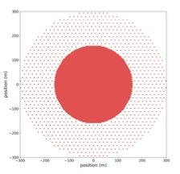

Monitoring and Control for SWGO
MOCOS
Summary
Known Issues
HW Scalers
HW Scalers (text)
TDC Scalers
TDC Scalers (text)
EMS Monitoring
Weather Monitoring
Lightning Monitoring
Computer Monitoring
Network Monitoring
HV Monitoring
HV Monitoring (text)
LV Monitoring
AC Voltage Monitoring
UPS Monitoring
TED-CH Monitoring
Main Transformer Monitoring
VME Create Monitoring
Power Monitoring Summary
Reconstruction Monitoring
Residuals Monitoring
Webcams
Data Transfer Schedule
Data Array Status
OR Status
OR Node Temps
OR HV
Shift Manual
Shift Calendar
Water Level (Pedro)
